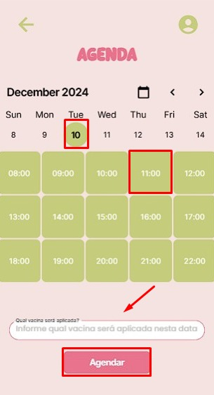
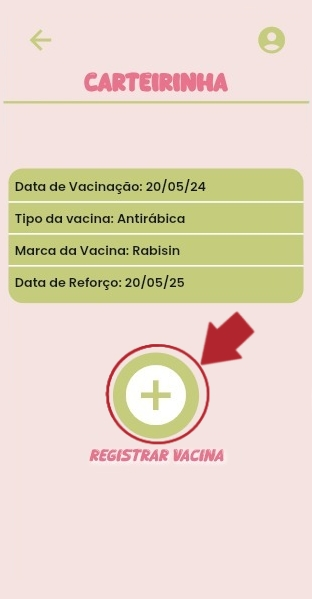
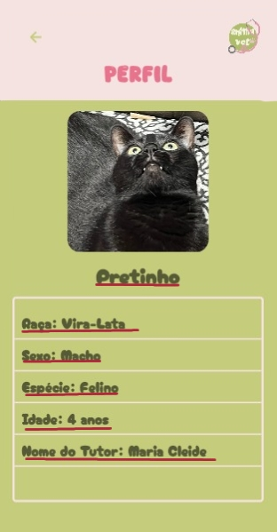

Sobre o aplicativo de vacinação de gato e cachorros
Nesta seção do site, vamos explicar como usar o aplicativo.
Criação de Conta
Aqui você encontra a tela de cadastro.
Para criar sua conta, basta inserir seu e-mail, sua senha e confirmá-la novamente. Em seguida, clique em “Confirmar”. Caso já possua uma conta, clique no texto "Login" para acessar.
Login
Aqui você encontra a tela de login.
Nesta página, insira o e-mail e a senha que você já cadastrou e clique em "Entrar". Se ainda não tiver uma conta, clique no texto "Cadastrar" para criar uma.
Perfil
Aqui você encontra a página inicial.
Nesta página, clique em “Adicionar Pet” para cadastrar seu pet. Se você já tiver um animal de estimação cadastrado, apenas toque no ícone do seu pet.
Adicionar pet
Nesta página você pode preencher informações sobre o seu animal de estimação, como o nome, a idade, o nome do tutor e a raça, por exemplo, em cães, algumas raças comuns são Husky ou Labrador; em gatos, há raças como Siamês ou Persa. Caso você não saiba a raça do seu animal, pode informar "Sem raça definida" ou "Vira-lata". Em seguida, selecione o sexo, a espécie do seu animal de estimação e depois aperte em “adicionar”.
Página Inicial
Nesta página você encontra a agenda, carteirinha, informações e perfil do seu pet. Na parte superior, aparecerá o nome do seu pet, e você também pode adicionar uma foto dele, basta tocar em qualquer um dos ícones para acessar a seção desejada, vamos começar pela agenda.
Agenda
Nesta página você pode ver vacinas agendadas em datas específicas, assim como agendar vacinas a serem aplicadas. No centro você poderá ver um calendário que marca as datas agendadas, e mais abaixo você pode ver o botão "Agendar" para que adicione a vacina.

Carteirinha
Voltando á página inicial, podemos ver a Carteirinha, que serve para que você possa ver vacinas já aplicadas, ou adicionar. No centro podemos ver uma tabela com vacinas e suas datas aplicadas, e abaixo podemos ver um campo onde você escreve o nome da vacina a ser aplicada, e o botão de agendar, para que assim que selecionados data, horário e nome da vacina seja agendado ao clicar no botão.

Adicionar vacina
Nesta página você pode adicionar vacinas que o seu pet já tomou preenchendo os campos con as informações solicitadas abaixo, como por exemplo a data da aplicação, qual foi a vacina aplicada, a marca da vacina (caso quiser), a data de retorno e se você deseja agendar a data de retorno.
Importância da vacinação
Voltando a página inical e entrando em "informações", podemos ver algumas importantes palavras sobre a grande importância de vacinar seu pet.
Perfil do pet
Por fim, ao voltar ao inicio e seguir em perfil, podemos ver as informações já cadastradas sobre o pet registrado neste perfil.
